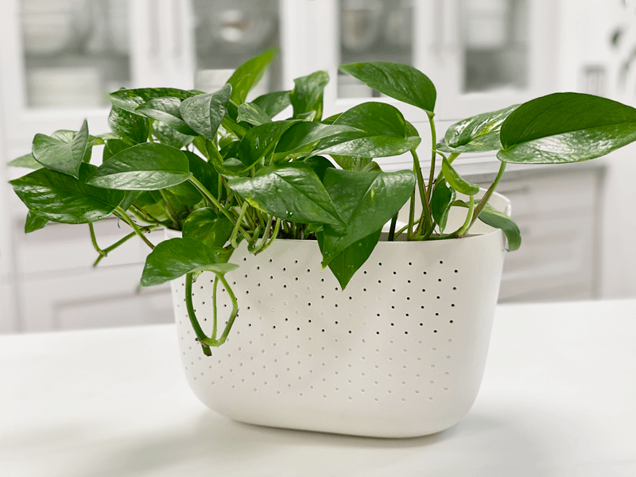
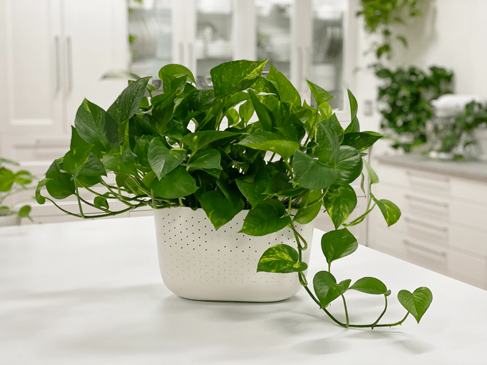
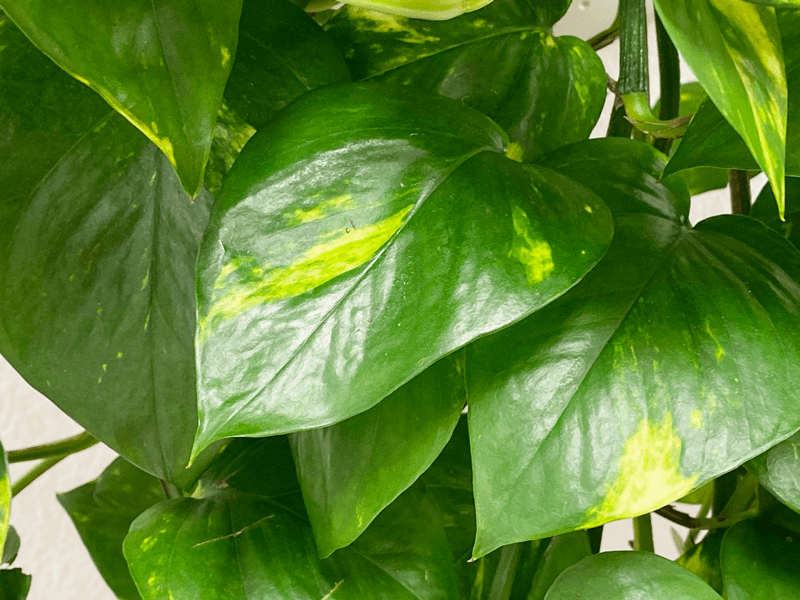
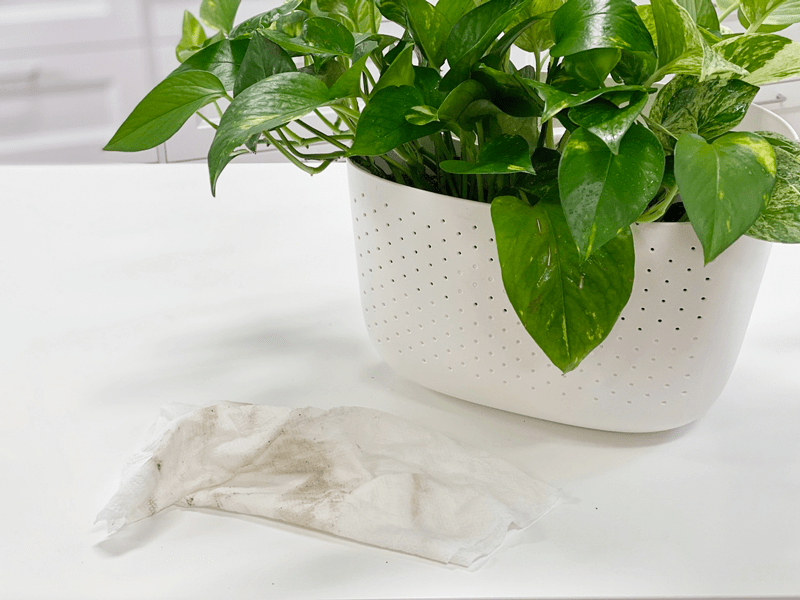

Pothos | Golden Pothos Plant | Care Difficulty – Easy
The golden pothos (Epipremnum aureum) plant has glossy, heart-shaped green leaves splashed with creamy gold. Although this plant tolerates low light well, its leaves may lose their variegation if kept in the dark for too long. It will look its best in moderate or bright light. It makes an excellent office plant because it grows well under fluorescent lights. I have quite a few of these in my Studio, which is mainly lit by fluorescent lights. They are looking very healthy.

I have admitted this before, but pothos plants are by far my favorite. They provide a lush pot of greenery with beautiful trailing vines. Ever seen pothos plants with really LARGE leaves? Most people grow their pothos to be lush and trailing, but you have the option of winding the vines around an upright pole, and soon you’ll find the leaves can grow quite large. I own quite a few golden pothos plants, and each one is unique. The patterns on the leaves are much like the patterns on a zebra…every one of them is different. I will sprinkle some photos of my plants throughout this post.
“Don’t Forget the Secret Sauce!”
In the summer of 2018, I came across a golden pothos plant for sale on our local Facebook virtual garage sale group. I didn’t hesitate one minute; I immediately reached out to the seller, letting her know that I wanted it. Within thirty minutes, Bob, Milo, and I were motoring down the road to pick up the plant. When I walked into the house, my jaw hit the floor. The plant was gorgeous and had eight trailing vines that reached over ten feet each. She sold the plant to me for twenty dollars!
As we were carrying it out the truck (Bob carried the pot, and I followed behind with the vines wrapped around me), the previous owner hollered out the front door, “Oh, the secret sauce!” She said that she had put 3-4 earthworms in the soil of the plant to help fertilize them. She did a mix of potting soil, compost, and earthworms. The concept was new to me, but I have to admit that this is one healthy plant!
-
-
Here you see a lot of golden yellow in the leaves…
-

-
This is also a golden pothos, but as you can see, it hasn’t developed a lot of its coloring yet.
Light Requirements
Golden pothos does well in low light to bright light. It is best to keep it out of the direct sun, which will burn foliage. Although pothos will tolerate low light, it will have more leaves and better variegation if kept in bright indirect light. Long spaces between leaves indicate that it is not getting enough sunlight.
Water Requirements
When it comes to watering, I find that pothos does best when the soil is allowed to dry out between waterings–not 100% dried out, though. I am learning how to watch the leaves for signs of the plant’s well-being: if the leaves are glossy, green, and perky, the plant is happy; if they’re wilting or turning brown, you’re not watering enough. I take the plant to the kitchen sink and water it until it starts dripping from the bottom of the pot. Don’t get in the habit of watering ALL your plants at the same time. Although this may seem like a time-saver, it isn’t necessarily best for the plants, especially if you have a variety of plants. Each variety has its own timing and needs.

Optimum Temperature
Pothos prefers average to warm temperatures of 65-80 degrees. Do not expose it to temperatures below 65 degrees even for a short time, because cold air will damage the foliage. Avoid cold drafts and heat vents.

Fertilizer – Plant Food
Feed monthly, spring through fall, with general-purpose indoor plant fertilizer. Advice about plant feeding is all over the board. If you overfeed your plants, they will let you know. Here are a few things to watch for:
- Yellowing or browning leaves.
- The top surface of the soil may be white or crusty.
- The leaves of the plant will start dropping off.
- The roots can begin to rot.
If you overfeed a plant, you can remove the houseplant from its current soil and repot it in fresh soil. This technique is undoubtedly the best way to get rid of the excess nutrients affecting your plant. Alternatively, you can flush the soil, which involves drenching the soil with water and letting it drain out. Repeat this several times to help the soil get rid of excess fertilizer.
Additional Care
- Remove any dead, discolored, damaged, or diseased leaves and stems as they occur, with clean, sharp scissors. Snip stems just above a leaf node; new growth will emerge from this cut. I do this every time I water my pothos. I use the watering time to inspect my plants thoroughly.
- Clean the leaves often enough to keep dust off of them. You can wipe the plant down regularly with rubbing alcohol to deter insects from the plant.
- About every six months, I like to give the plant some preventative treatments against the wildlife of plants (AKA bugs). I spray with a diluted rubbing alcohol solution, then wipe off of each leaf with a clean cloth. After that, I spray with a neem oil solution. I will share all of this in another detailed post.
-

-
This was a relatively clean plant, to the naked eye… as you can see, there was a lot of dust on the leaves. This slows down growth, as the dust blocks photosynthesis.
-

-
Rubbing alcohol is great for attacking bugs that are attracted to plants.
-

-
My neem oil solution is something I use for preventative care.
Plant Characteristics to Watch For
Diagnosing what is going wrong with your plant is going to take a little detective work, but even more patience! First of all, don’t panic, and don’t throw out a plant prematurely. Take a few deep breaths and work down the list of possible issues. Below, I am going to share some typical symptoms that can arise. When I start to spot troubling signs on a plant, I take it into a room with good lighting, pull out my magnifiers, and begin with a thorough inspection.
Variegation on the leaves is fading
- Leaves are mostly green with streaks/splashes of golden yellow. The leaves will lose their variegation when they don’t get enough light. If your plant is unfurling new leaves that are solid green, don’t worry. That’s normal – they’ll become variegated as they age.
- Solution: Move the plant to a place where it will be exposed to bright, indirect sunlight. Give it time to recover.
Stems are leggy with few leaves
- Stems that are allowed to grow longer than 4 ft often shed most of their leaves near the base of the plant.
- Solution: It’s a good idea to trim off long stems once in a while to keep your pothos leafy and full. Stems that are mostly bare can be cut off at the soil level. Occasional watering lapses, age, and inadequate light are the most common causes of this leaf loss, so do your homework.
The base of the plant is looking sparse
- If you allow the vines to grow long and never prune, the top of the plant, in the pot, can become sparse.
- Solution: If the base of the plant is looking sparse, it is time to trim the vines, which will cause the plant base to become lusher. Cutting right after a leaf node (the place where the leaf is attached to the stem) will encourage the stem to branch out, giving you a fuller plant.
The leaves are soft and wilting
- Wilting is caused by dry soil.
- Solution: Although the plant will quickly bounce back after a good drink, make sure to water it regularly. Continual droughts can put the plant under a lot of stress.
Yellow leaves
- Overwatering.
- Solution: Allow soil to dry out a bit between waterings.
Yellow and mushy stems
- If the stems are yellow and mushy, it’s a symptom of root rot. Depending on the severity, your plant may be too far gone.
- Solution: Remove the plant from the pot and check the roots. You can trim the dark mushy roots with scissors. If any of the stems are still green and healthy, propagate stem cuttings for new plants and discard the dying plant and soggy soil.
Brown edges of leaves
- If the leaves are turning brown, it can be a sign of underwatering.
- Solution: Take the plant to the kitchen sink and drench it with water. It is best to use plant containers with drainage holes in the base. I like to give it a good dose of water, let it soak in, add more water, let it soak in…repeat until the water runs out of the base.
Brown leaf tips
- Brown leaf tips are often an indicator of low humidity.
- Solution: Depending on the climate you live in, you might need to increase the humidity of your house with a humidifier. Brown leaf tips are caused by dry air.
Fungus gnats
- Fungus gnats are harmless, except if you want to keep your sanity. They love to hang out in front of your face, testing your will and composure. They love wet, peaty potting mixes. You’ll find these tiny black fly-like insects crawling on the soil.
- Solution: Check your watering habits. Keeping the soil too wet makes a breeding ground for these gnats. There are several different treatments to help keep the population under control. Click (here) to learn more.
My plant is bushier on one side
- If your plant is bushier on one side, rotate the plant periodically to ensure even growth on all sides, and dust the leaves often so the plant can photosynthesize efficiently. When dusting the leaves, also take the opportunity to inspect the undersides and keep an eye out for pests.
Common Bugs to Watch For
If you want to have healthy houseplants, you MUST inspect them regularly. Every time I water a plant, I give it a quick look-over. Bugs/insects feeding on your plants reduces the plant sap and redirects nutrients from leaves. Some chew on the leaves, leaving holes in the leaves. Also watch for wilting or yellowing, distorted, or speckled leaves. They can quickly get out of hand and spread to your other plants.
-

-
Mealybugs
-

-
Scales
-

-
Spider mites
-

-
Aphids
IF you see ONE bug, trust me, there are more. So, take action right away. Some are brave enough to show their “faces” by hanging out on stems in plan sight. Others tend to hide out in the darnedest of places, like the crotch of a plant or in a leaf that has yet to unfurl.
- Mealybugs look like small balls of cotton. They can travel, slowly, but they have a strong will and determination! Though they are slow-moving, if any plant is touching another, there is a chance the mealybug will hitch a ride on a new leaf and spread. They breed like rabbits of the insect world. Females can deposit around 600 eggs in loose cottony masses, often on the underside of leaves or along stems.
- Scales are dark-colored bumps that are primarily immobile insects that stick themselves to stems and leaves. They are rather inconspicuous and don’t look like a typical insect. They can range in color but are most often brownish in appearance. They’re called “scales” primarily due to their scale-like appearance on a plant, due to waxy or armored coverings. They are often seen in clumps along a stem, sucking away at the plant’s juices with their spiky mouthpart.
- Aphids are more commonly seen if you place your plants outdoors. Aphids are indeed bugs. They are tiny insects that, along with black, also come in shades of yellow, green, brown, and pink. They are often found on the undersides of leaves.
- Spider mites are more common on houseplants. They are not insects – they are related to spiders. These appear to be tiny black or red moving dots. Spider mites are nearly invisible to the naked eye. You often need a magnifying lens to spot them, or you may just notice a reddish film across the bottom of the leaves, some webbing, or even some leaf damage, which usually results in reddish-brown spots on the leaf.
Toxicity
All parts of this plant are toxic to humans, as well as dogs and cats. They contain insoluble calcium oxalates, which are poisonous if ingested. Keep the plant high up and out of reach from any vulnerable members of your family; this includes pets.
Nibbling on the plant can cause severe irritation of the lips, mouth, and tongue. It will create a painful burning sensation inside the mouth, and if ingested, will cause stomach upset, along with vomiting. Pets may exhibit these signs along with excessive drooling and pawing of the mouth. In rare cases, ingesting the plant can cause swelling of the airways, making it difficult to breathe or swallow. Though poisoning of pets is usually only mild to moderate, it can be fatal in some instances, so you should visit a vet if you suspect your pet has eaten any of your pothos plant (The American Society for the Prevention of Cruelty to Animals).
© AmieSue.com